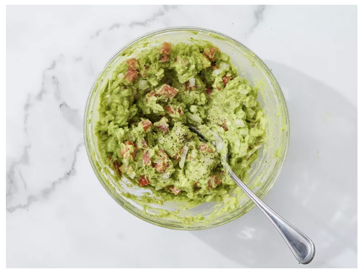
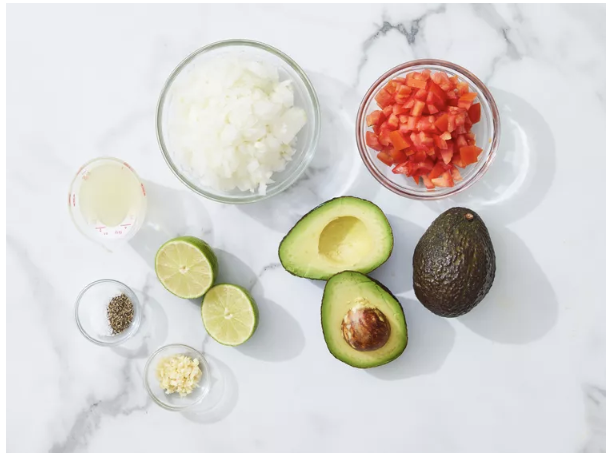
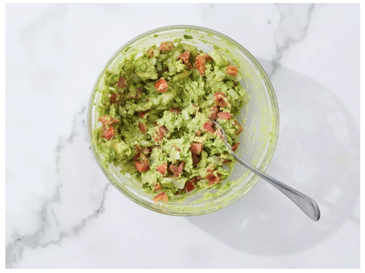
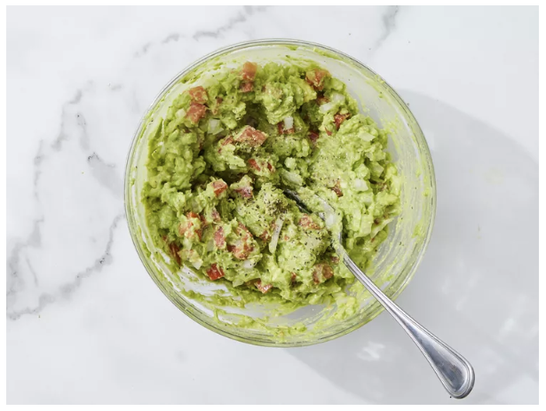

Guac

Description
This easy guacamole recipe is quick and simple to make. Great with tortilla chips or as a topping for Mexican foods!
Ingredients
- 2 ripe avocados, peeled and pitted
- 1 small onion, finely chopped
- 1 ripe tomato, chopped
- 1 clove garlic, minced
- 1 lime, juiced
- salt and pepper to taste
Steps:
- Step 1 : Gather all ingredients.

- Step 2 : Mash avocado in a medium serving bowl.

- Step 3 : Stir in onion, tomato, and garlic.

- Step 4: Add lemon juice,salt and pepper

- Step 5 : Cover and chill guacamole for 30 minutes to allow flavors to blend.
For more detailed recipe